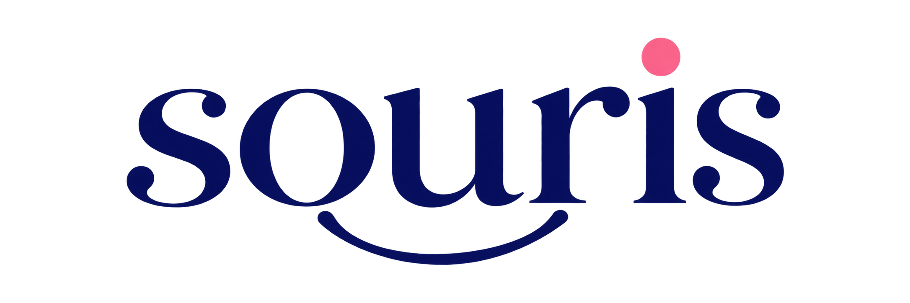

Prototype mobile natif de Souris — gestion quotidienne pour les professionnelles travaillant sur rendez-vous. L’Agenda est l’écran d’accueil : il montre les phases d’une prestation, les temps de pose et les rendez-vous volontairement simultanés.
iPhone 15 Pro · cibles tactiles 44 px · feuilles modales, grands titres, barre d’onglets iOS.
Pixel · cibles 48 dp · barre de navigation Material 3 avec indicateur, FAB carré arrondi, feuilles à 28 dp.
Chargement, journée libre et perte de synchronisation — vérifiés sur les deux écrans les plus consultés.
Un seul jeu de tokens pour les deux plateformes. Le violet ne sert qu’aux actions ; les pastels ne servent qu’à distinguer rendez-vous, phases et états.
Les listes sont structurées par intertitres, filets d’un pixel et graisses. Aucune section n’est transformée en carte par défaut ; seules les feuilles modales sont des surfaces.
La timeline reste lisible d’un coup d’œil. Les rendez-vous simultanés se répartissent en colonnes calculées, jamais superposées.
Rayures pêche à l’intérieur du rendez-vous : la cliente reste en rendez-vous, la professionnelle redevient disponible. C’est le seul motif graphique du produit.
Le bouton plein est réservé au FAB de création, ou au bouton d’engagement d’une feuille. Tout le reste est fantôme, discret ou lien.